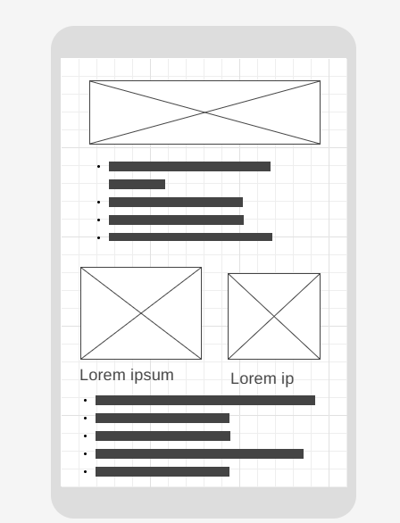
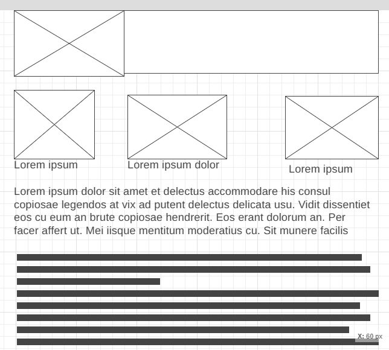

Site Name
Harare Chamber of Commerce
This represents the chamber operating in Harare, the capital city of Zimbabwe.
Site Purpose
The Harare Chamber of Commerce aims to:
- Promote local businesses and economic development.
- Provide a platform for networking and community events.
Scenarios
- What events will the chamber be holding this month that promote business-to-business networking?
- Where can I find contact information for the chamber's board of directors?
- What has been the population growth in the area?
Color Schema
The selected colors for the site are:
- < class="color-swatch" style="background-color: #003366;"> Dark Blue (#003366) for headings and navigation bar.
- < class="color-swatch" style="background-color: #FFD700;"> Gold (#FFD700) for accents and highlights.
Typography
The selected fonts for the site are:
- Heading Font: Arial, sans-serif (used for all headings)
- Body Font: Indie Flower, serif (used for body text)
- Special Sections Font: Courier New, monospace (used for special sections like code snippets or quotes)
Wireframe
Below are rough sketches of the home page layout for both mobile and desktop views:
 Page Specifications
- Home: Attention-grabbing information, community information, weather, calls to action, business spotlights.
- Discover: Locale history, current demographics, current events, image montage of the area.
- Directory: List of local businesses and organizations that belong to the chamber of commerce.
- Join: Information about the benefits of joining the chamber, membership application form with three membership levels (non-profit, silver, gold) and their respective perks.